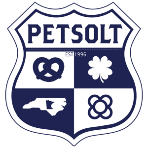

03-Jun-2026 to 19-Sep-2026
Reial Monestir de Santa Maria de Pedralbes
A special summer opening of the Gothic cloister at the monastery of Pedralbes at sunset, one of the largest of its kind in the world.

PetsoltCatalonia · This Weekend
A weekly auto-updated guide to things to do in Barcelona. Curated from three local sources, refreshed every Thursday, and built for weekend planning.
Last refreshed 17-Sep-2026 (auto-updated every Thursday)
Reial Monestir de Santa Maria de Pedralbes
A special summer opening of the Gothic cloister at the monastery of Pedralbes at sunset, one of the largest of its kind in the world.
Parc del Fòrum
An independent and urban music festival held every autumn at Barcelona’s Parc del Fòrum.
WOLF
Doors: 8 pm Sigmund Wilder: 8:30 pm Children under 16 will be able to access only if they are accompanied by the parent or the legal guardian. The Canadian band ACTORS revolutionized the music scene i
Sant Jordi Club
A handling fee of 2€ applies per order. Children under 16 will be able to access only if they are accompanied by the parent or the legal guardian. Access form for children under 16 years *All attendee
Carrer de Dolors Masferrer i Bosch les Corts
Arc de Triomf
A major fair dedicated to books in Catalan, with exhibitors, talks and presentations for all audiences.
Aclam Club
C Teodor Llorente el Guinardó
Whatsapp — Original title: “Jornada 'Danses tradicionals'”
Carretera de Vallvidrera a les Planes Vallvidrera, el Tibidabo i les Planes
de dilluns a divendres de 16 a 20 h — Original title: “Taller 'Tarda de circ'”
Circuit de Barcelona-Catalunya
Prestigious international endurance race held each year at the Circuit de Barcelona-Catalunya.
Various locations
A fun run with various categories, organised as part of the La Mercè festivities.
Vall de Núria
An iconic mountain race that crosses peaks rising above 2,700 metres in the Catalan Pyrenees.
Various venues
Official commemoration of the centenary of Gaudí’s death, marking his legacy in architecture, nature and religion.
Arenas de Barcelona
Virtual reality experience transporting you to ancient Rome to explore the Empire's splendour.
Various venues
A recognition awarded to Barcelona in 2026, showcasing its urban model internationally and accompanied by events focused on the city’s architecture.
Casa Batlló
An evening visit to Casa Batlló, rounded off with live music on its modernista rooftop.
L' Hospitalet de Llobregat
A circus show imagining an alternative past, where an inventor explores an unseen universe brimming with possibility.
MACBA-Museu d'Art Contemporani de Barcelona
The "Anna Moreno. La Tercera Torsió" exhibition at the MACBA reflects on utopian architecture based on the work of Ricardo Bofill.
Casa Batlló
An immersive exhibition at Casa Batlló bringing Gaudí, Miró and Gomis together through original works, photography and digital technology.
Museu Picasso
The "Picasso Xipre. Trobades amb la ceràmica del Mediterrani" exhibition at Museu Picasso explores the dialogue between Picasso's ceramics and ancient Mediterranean art.
Museu Nacional d'Art de Catalunya
The "Adquisició Sim, el dibuix i la guerra" exhibition at the MNAC showcases drawings by José Luis Rey Vila that portray the Spanish Civil War from a documentary perspective.
Various venues
A guitar-centred music festival with an eclectic programme, filling Barcelona's most iconic venues with sound.
Various venues
One of the world’s longest-running and most prestigious jazz festivals, featuring emerging talent alongside established international stars across venues throughout the city.
Barcelona
Various locations
Barcelona Hotel Bar Week showcases the city's best hotel bars with signature cocktails, creative flair and exclusive experiences.
Gran Teatre del Liceu
Giuseppe Verdi's Aida opens the season at Gran Teatre del Liceu with a production featuring love, war, freedom and an incredible aura on stage.
Various venues
A diverse music festival that fills the city with emerging artists during the La Mercè celebrations.
Port Vell
A sporting event held within the framework of the La Mercè festivities, featuring an open-air fitness masterclass.
Centre de Fotografia KBR - Fundació Mapfre
The "Dana Lixenberg. American Images" exhibition at KBr Fundación MAPFRE offers a multifaceted, dignified portrait of the United States.
Carrer de Viladomat Sant Antoni
De dilluns a divendres de 9 a 21 h Dissabte de 10 a 14 h — Original title: “Cinema "Paula"”
Carrer de Dolors Masferrer i Bosch les Corts
Reial Club de Polo de Barcelona
A prestigious show jumping competition at the Reial Club de Polo de Barcelona, attracting the world’s finest riders and horses.
Various venues
A classical music festival devoted to lieder [German art songs], pairing recitals by established artists with activities in venues across the city.
Casa Milà – “La Pedrera”
Solo exhibition spotlighting Anselm Kiefer’s vitrines, where he blends materials and symbolism to explore memory, history, and identity.
Fira de Barcelona - Montjuïc
A multidisciplinary festival bringing together hundreds of international tattoo artists, along with graffiti, live music, breakdance, extreme sports and motor-based art.
Pl Angeleta Ferrer Sant Martí de Provençals
de dilluns a divendres de 10 a 14h i els dimarts i dijous de 16 a 19h — Original title: “Concert " Entorn" a càrrec de Kic Barroc”
Bagà
An annual trail running event in the Catalan Pyrenees, with high-mountain routes ranging from 21 to 100 km.
La Rambla
La Rambla dons her finest floral decorations in honour of her patron saint.
Port Vell
A boat show dedicated to leisure and recreational boating, combining commercial exhibition with nautical activities.
Plaça de Sant Jaume
Human towers rise in Plaça de Sant Jaume, a tradition observed during Barcelona’s main festival.